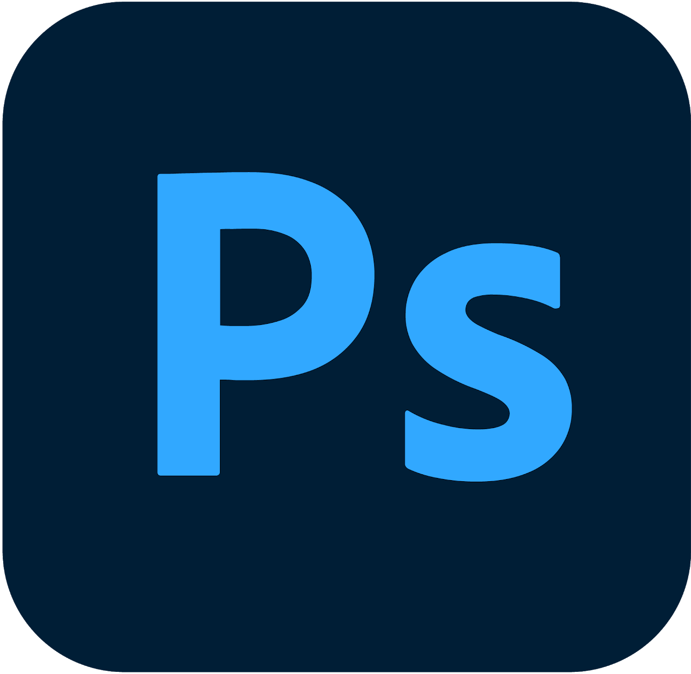
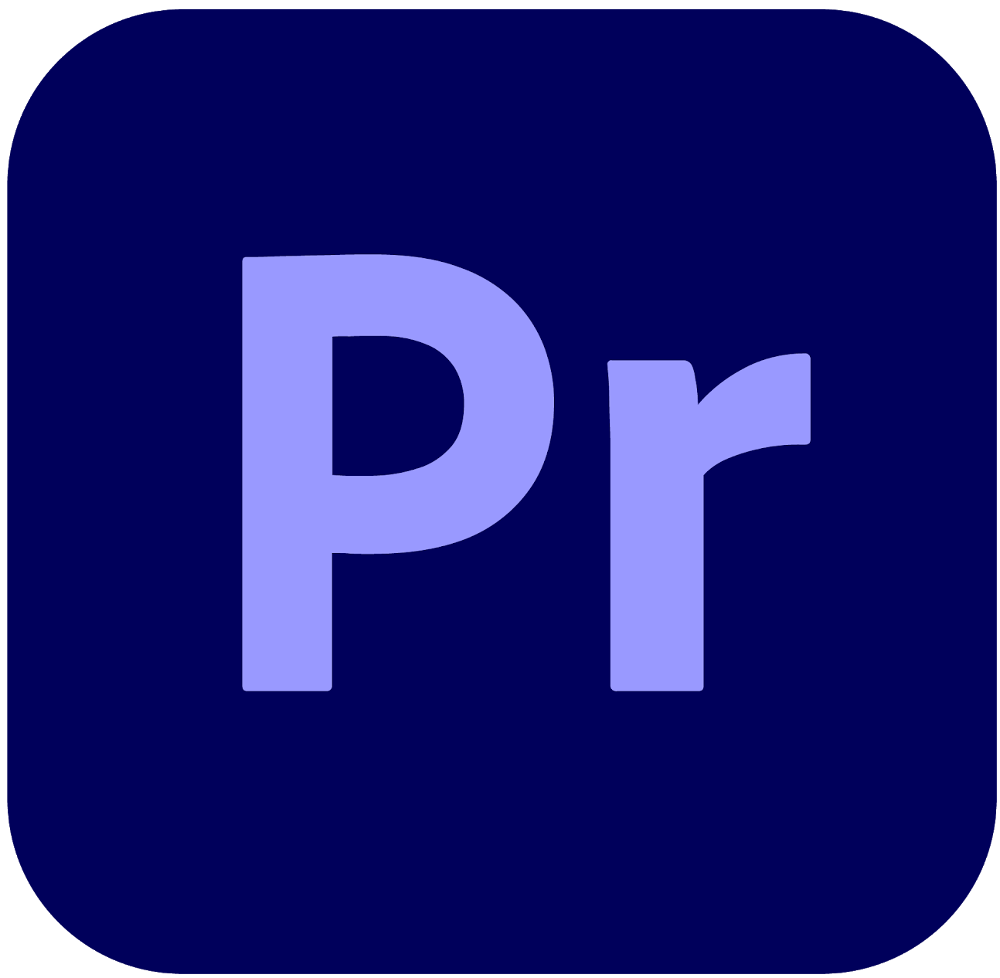
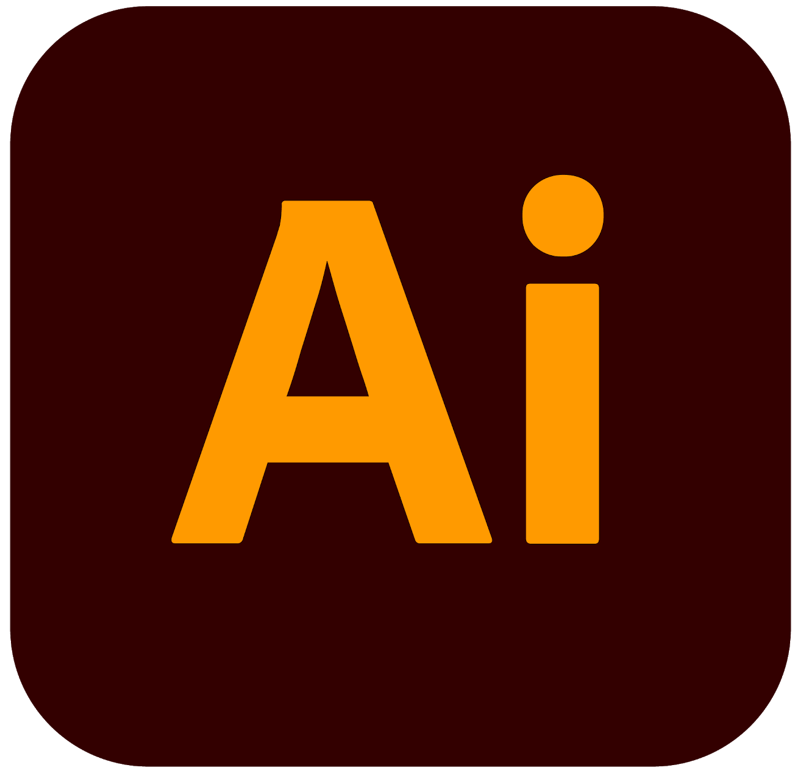
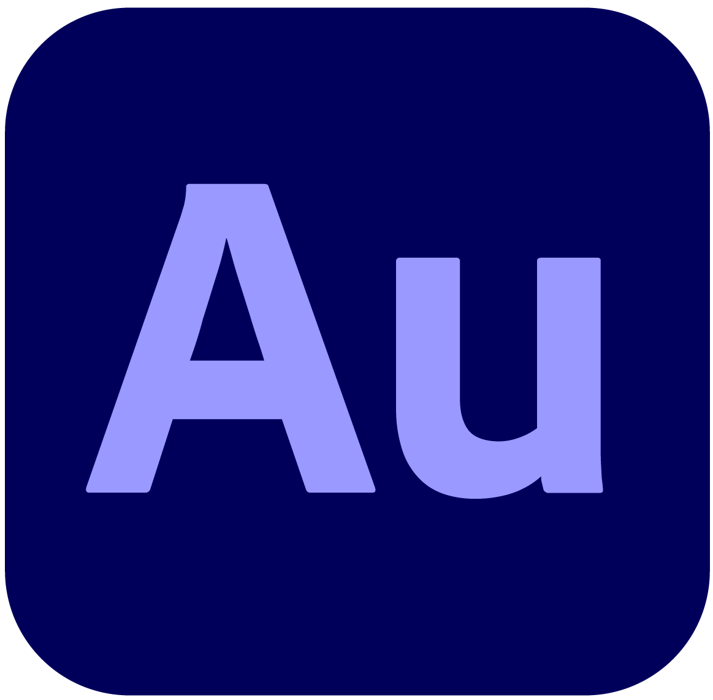
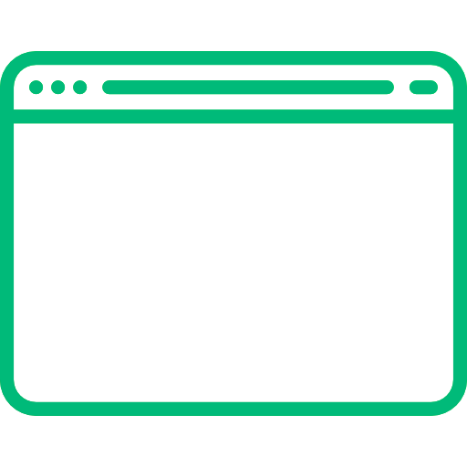
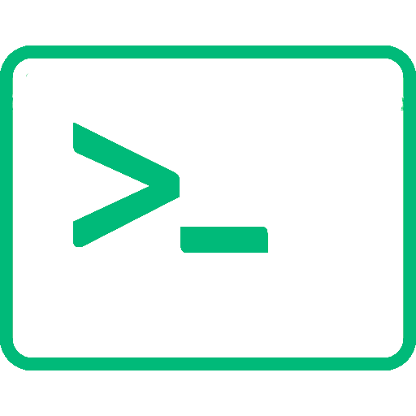

Natanael Chávez
Geek de la tecnologia
We long for love, We wish we had more time
And we fear death

Soy Natanael, un placer.
Desde San Miguel, El Salvador
Empece mi recorrido en el desarrollo y tecnología en 2019, tengo un interés muy especial por el contenido audiovisual, porque ahí es donde siento que soy alguien libre y me siento más cómodo expresando mis ideas y mis pensamientos. También soy un aprendiz del desarrollo en Frontend y el Backend siempre dispuesto a aprender cosas nuevas.
Video Editing
Sin duda alguna mi mayor fortaleza es el manejo de contenido audiovisual, desde editar una simple fotografía hasta efectos especiales en videos elaborados.
Lenguajes y herramientas que utilizo








Frontend Development
Me he enfrentado al diseño web una o dos veces anteriormente, es un arte que me parece fascinante aspiro a aprender más y adentrarme más en este mundo.
Lenguajes y herramientas que utilizo



Backend Development and others
Las tecnologías que he aprendido en este camino, la mayoría de ellas útiles en mi día a día, y otras esperando el momento adecuado para ser utilizadas.
Lenguajes y herramientas que utilizo